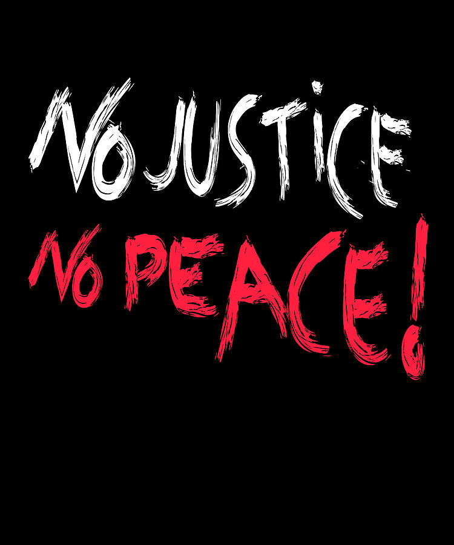

Timeline photos
Jayland Walker was murdered in Akron by 60 bullets (plus another 30 that missed him). He was not armed when he was shot.
Men have stolen the bodily autonomy rights of Women all across America.
I was told by Akron lawyers yesterday that tents and tiny houses are against the law and they want me to sign a piece paper that says I will never shelter a homeless person ever again in a tent.
THIS COUNTRY IS FUCKED UP AND IT'S THE LEADERS DOING THE FUCKING.
It's not Jayland. It's not women. It's not homeless people. It's not even truly the police. Their boss is the mayor. HE is responsible for Jayland's death. We train police officers to treat American citizens as enemy combatants. THAT'S LEADERSHIP.
I know a thing or two about protesting and activism.
HERE'S WHAT I KNOW: No matter how you do it someone is going to tell you that you are doing it wrong. Let me tell you the truth: YOU ARE DOING IT PERFECTLY RIGHT FOR YOU.
If you feel compelled to give money and resources to organizations you support that is critically important.
If you feel compelled to march in the street and stop traffic that is critically important.
If you feel compelled to destroy property that is critically important. "A riot is the language of the unheard," Martin Luther King Jr
And if you feel compelled to start a revolution (EXACTLY the same way we started our country) that is critically important.
There is only one wrong way to do this: TO DO NOTHING AT ALL WHEN YOU FEEL COMPELLED TO DO SOMETHING.